為什麼台灣的官方統計這麼難用？（一）台芬官方統計服務的比較
目錄
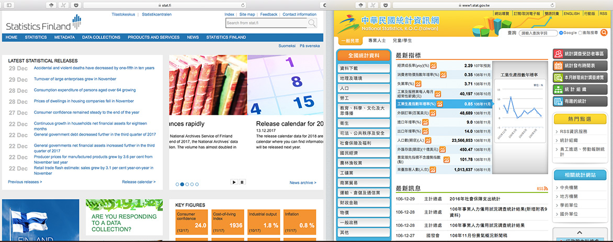芬蘭（左）與台灣（右）政府的官方統計網站首頁
這篇報告目的，是分析芬蘭與台灣政府統計組織與其服務架構的關聯。我想藉由說明他們怎麼收集、處理跟公開資料，指出看不見的架構是如何影響多面的服務產出。我一開始的分析重點，偏向整體國家統計體系的中心化與去中心化，然而我發現，芬蘭與台灣提供的統計服務體驗，與既有理論有所衝突。
芬蘭的統計體系較台灣去中心化，國家統計牽涉14個主要政府部門間的合作。理論上，它提供的統計服務應該會較難整合，進而影響一般使用者的體驗。然而實際上台灣的官方統計服務卻遠較為差而破碎，甚至讓我一開始誤以為台灣的統計體系是非常去中心化的。是以本文最後試圖轉向，討論中心化與去中心化系統外幾個可能的原因，它包含芬蘭公務體系的職位制、預算規模、台灣統計機關未獲得獨立地位等。最後試著導出台灣如果要改善，怎麼樣的方向會是比較可能的。
所以報告會分成兩篇，本篇是第一部分：
- 台芬官方統計服務的比較
- 分析國家統計系統，與改善台灣方服務的可能
有關這篇文章的背景說明 (http://blog.yentsenliu.com/2017/12/16/20180104_statistics_sys1/#fu-ji-bei-jing-shuo-ming)
台芬官方統計服務的比較
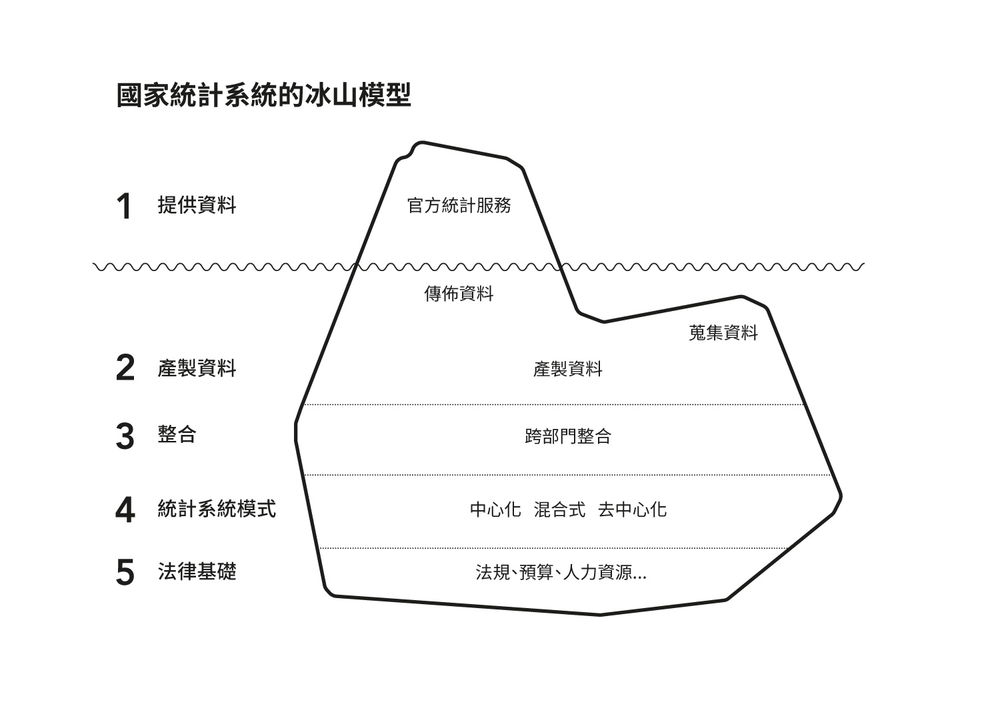國家統計系統的冰山模型
官方統計服務例如索取資訊、線上資料庫、官方報告等等，大概都是使用者最熟悉的。只是，如果我們把它看成冰山，在水下面還有一堆看不見的複雜結構，撐起上面那些服務。
靠著把冰山一層層畫出來，我要用兩篇文章，來說明四層架構，包含（1）傳達資料（2）產製資料（3）整合 （4）統計系統模式。
本篇文章先討論台灣與芬蘭的第一層「傳達資料」：最表層的服務。
芬蘭國家統計服務
在這段我簡單說明一下芬蘭的統計服務有什麼，就是冰山水上面那些大家平常會接觸的東西，之後再拿一些跟台灣相異的部分對照。
在芬蘭，所有國家統計服務，都被整合到一個單一入口網站 Tilastokeskus/Statistics Finland，由他們的國家統計機構 Statistics Finland 開發跟管理。我簡單把所有的服務歸納在下面這張圖：
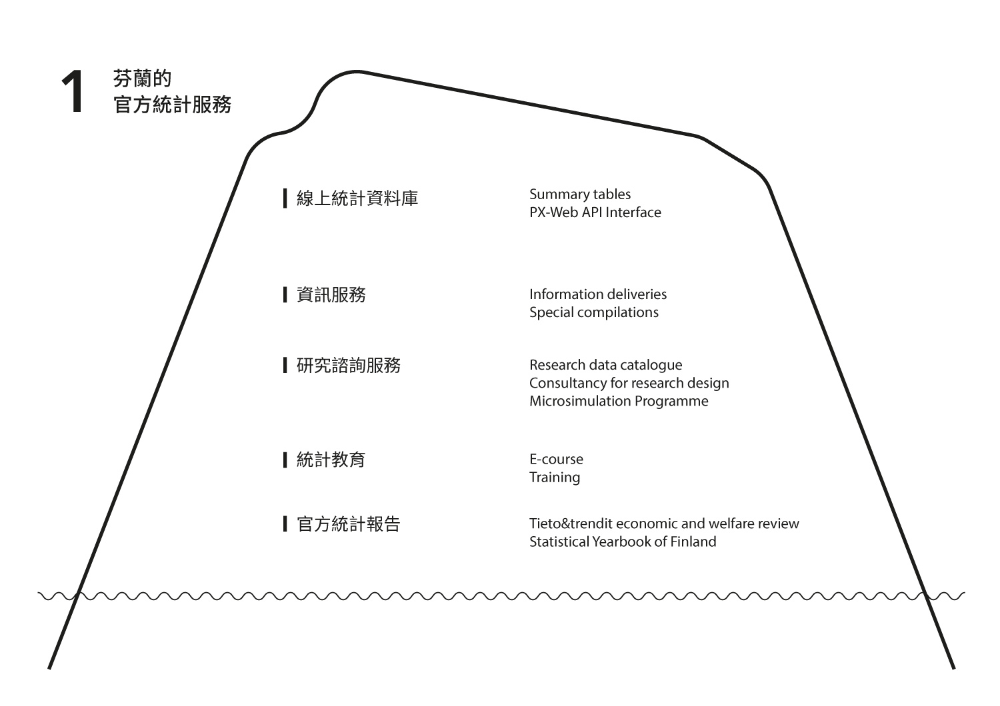圖上面左邊這邊是主要的服務，右邊是他們各自的子項目內容。
線上統計資料庫
首先是線上統計資料庫，都在一個入口網站上了。 Statistics Finland 給每個新發布與有更新的資料集，都做了類似新聞稿的簡單介紹，同時提供清楚好懂總結式的圖表。
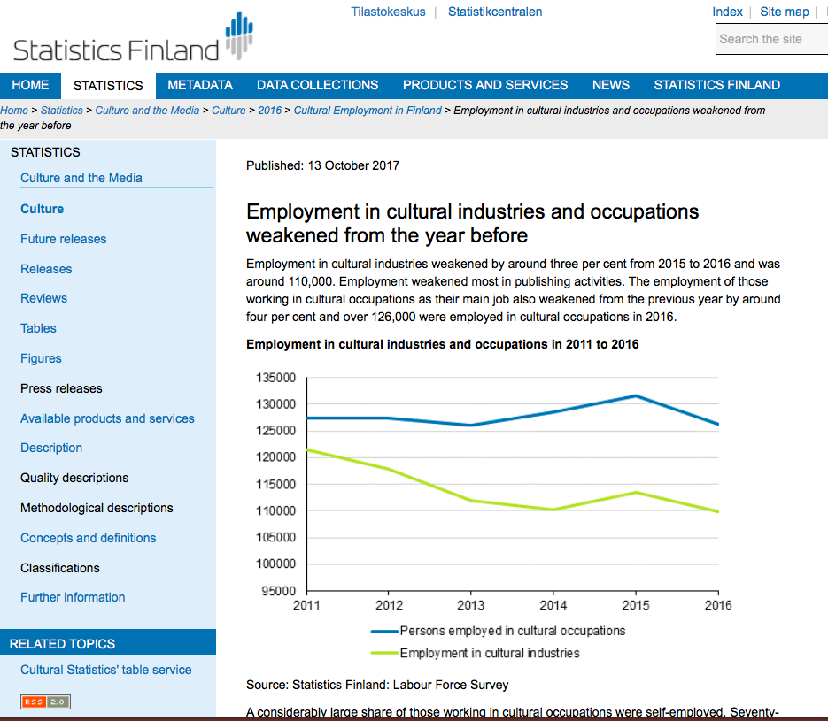
資料集英文譯名為 Statfin，使用稱為 PX-Web的互動介面，這是由瑞典政府開發的，基於 SQL 資料庫技術的網路程式，在2015年免費開放。目前有將近20國/國際組織使用，芬蘭亦直接沿用之。使用者首先選取資料集，接著選取想要的變項。最後網站會自動產生相關的圖表（視資料內容呈現直方圖、折線圖、純表格……等。）給使用者，並且提供多種格式的下載選項（csv, xlsx, json, px 等）。
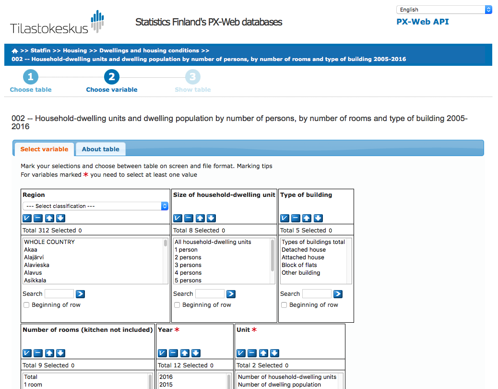PX-Web的介面相當簡單，可以實際找資料集玩玩看。唯一的缺陷是 icon 設計得有點不明所以。
如果你對 PX-Web 資料集細節沒興趣，只想按主題瀏覽整理好的報告，還有專門放上述這些介紹跟報告的網站 Findicator.fi。
資訊服務
接下來是資訊服務， 如果公眾想要特定資料，或對統計有任何疑問，可以直接前往 Statistics 的服務台、電洽、或填寫線上表單索取/詢問。
如果是既有簡單的內容，可以免費； 如果資料需要特別編譯、或特別龐大，則需要支付一定費用，但公務機關和學術單位免費。針對研究者，他們提供一個完整的清單，表列 所有可以藉由資訊服務索取的資料（https://taika.stat.fi/en/index） 。他們也有對公眾開放的統計圖書館跟供租借的電腦間。所有的資料都受到個人資料法的保護。
顧問服務
Statistics Finland 同時也提供面向研究的諮詢服務。他們很自信地在網站上這樣宣稱
「Statistics Finland 的訪談與調查服務專業是芬蘭最頂尖的。」（作者自譯）
他們也針對來自公私部門的研究單位，提供收費的顧問服務，例如問卷設計與測試、採樣、調查、訪談。
教育課程
我們還可以在 Statistics Finland 網站上找到公共教育課程，有線上也有線下的。
線上課程主要是統計與研究方法的基本素養，也有主題式課程例如勞動、人口等，甚至有芬蘭統計史的課程。線上課程是文圖互動介面，視情況小節尾端會提供案例與隨堂測驗；線下課程則非常具有主題性，有的還跟上時事，譬如「另類真實與事實」、「消費趨勢」、「勞動市場」等，從主題切入，介紹如何運用統計工具跟取得相關資料。
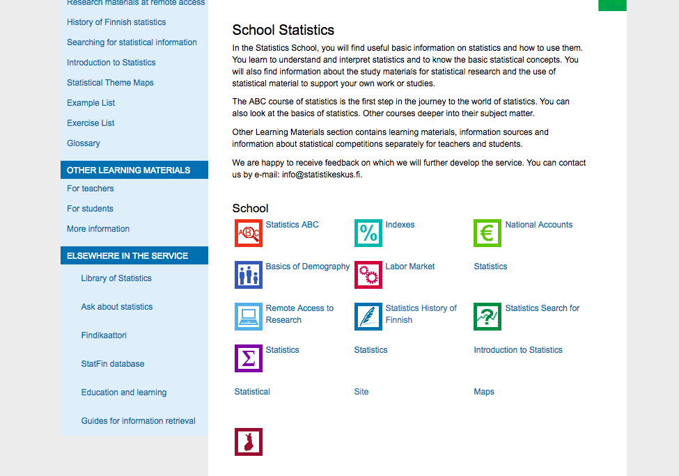線上課程內容。此圖截自課程網頁，使用google translate翻譯：[Tilastokoulu](https://goo.gl/eNKFvf)
官方統計報告
最後是官方統計報告的發布，也是透過 Statistics Finland 的網站公開。包含各種主題，譬如社會、經濟、環境的發展。同樣的，提供每年芬蘭國情概覽的國家統計年報也可以在此找到。
小結
芬蘭的線上統計服務相當清晰，儘管或許因為有四個統計主管機關，因此某些特定統計會外連到別的網站（例如：芬蘭自然資源研究所），但因為介面都是統一使用 PX-Web，所以整體體驗仍然相當一致，搜尋資料也輕鬆愉快。
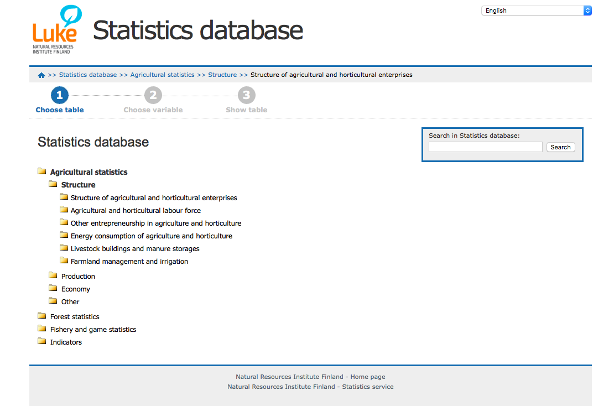芬蘭自然資源研究所的資料庫介面，可以從 Statistics Finland 的目錄連過去。介面一樣，只是logo換掉而已。請參考此連結 https://goo.gl/DKYnn8
台灣國家統計服務
複習一下。右邊這個是台灣，應該不難辨認吧？
台灣的部分，我會用類似芬蘭的架構去對應台灣的服務，最後再比較彼此不重複的部分。這是台灣的官方入口網站 中花民國統計資訊網/Statistical Information Network of the Republic of China。
線上統計資料庫
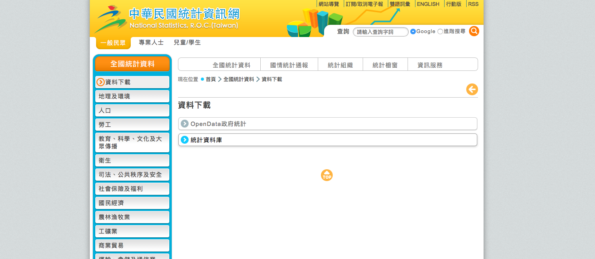
第一個是開放政府資料，嚴格來說不算統計。芬蘭也有自己的開放政府網站：opendata.fi。這不在本文討論範圍所以跳過。
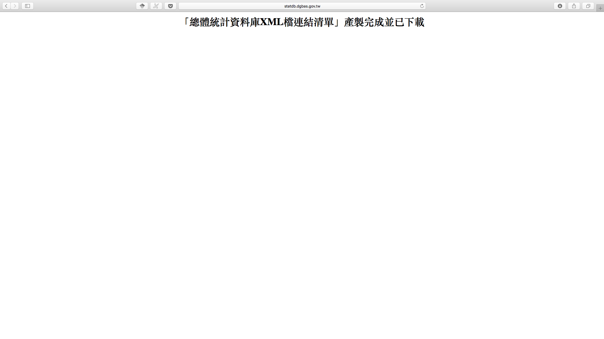統計資料庫的畫面
☝️ 第二個資料庫很厲害，請務必點點看該連結。資料庫給我了一份excel檔案，裡面是所有資料的下載連結，要自己複製貼上放到網址欄才可以下載。
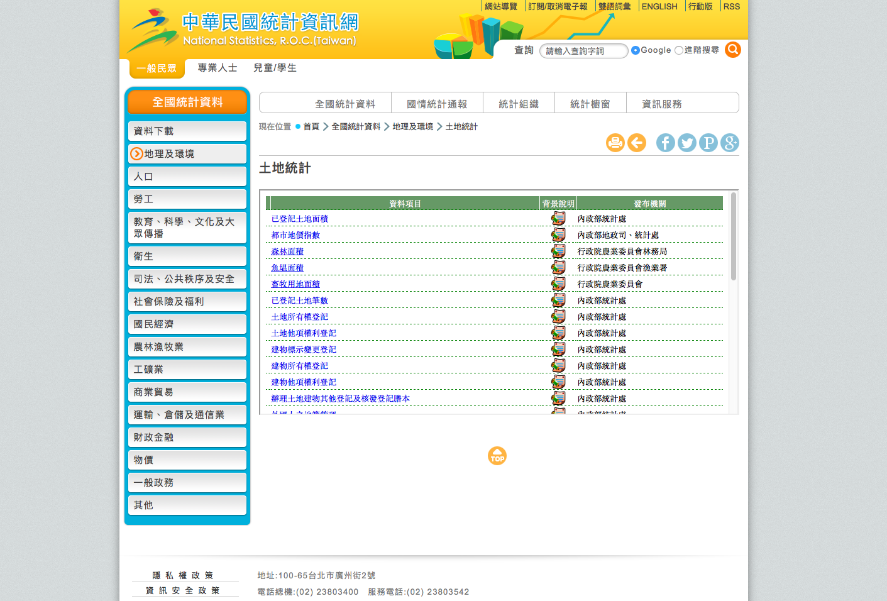
☝️ 飽受驚嚇之餘，讓我們試試看左側「地理與環境」>「土地統計」，我最終獲得了一個我沒辦法在mac上打開的 ods 格式。不能選格式…
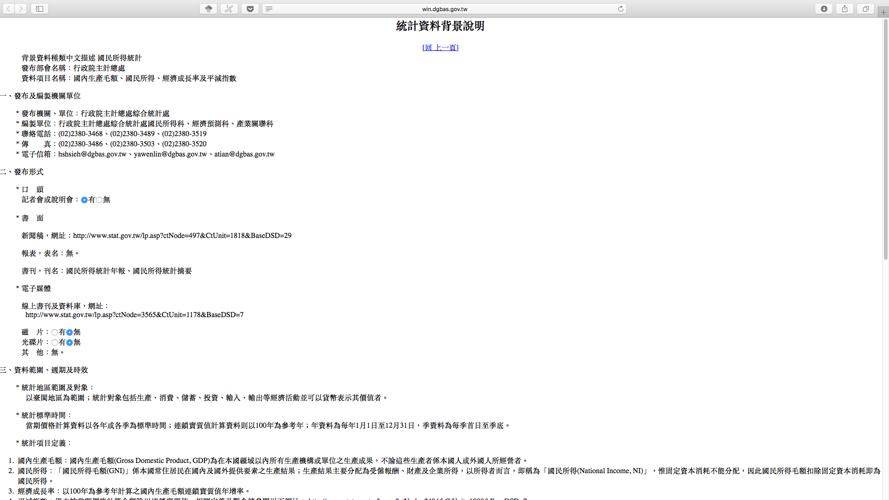慘不忍睹...
☝️ 同頁面有個不起眼的資料說明連結，點進去的頁面長這樣。
專業人士版本的統計資料庫
好，統計網有個 for 專業人士的版本，不知道會不會好一些？我很好奇專業人士會獲得怎麼樣的線上統計資料庫服務。
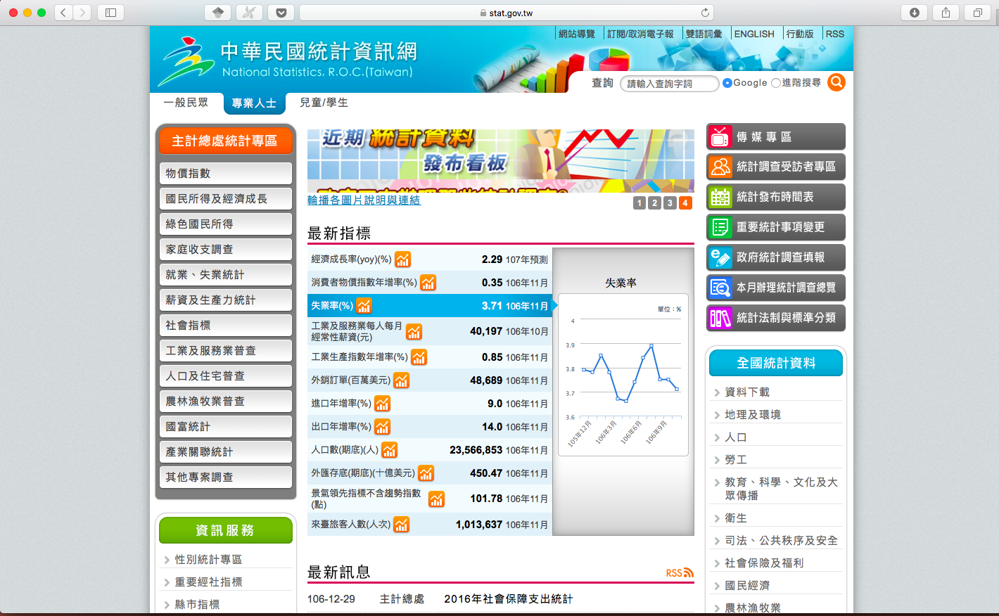
☝️ 首頁看起來還好，雖然視覺上蠻2000年代風格，但我至少知道資料應該在左邊這個menu。
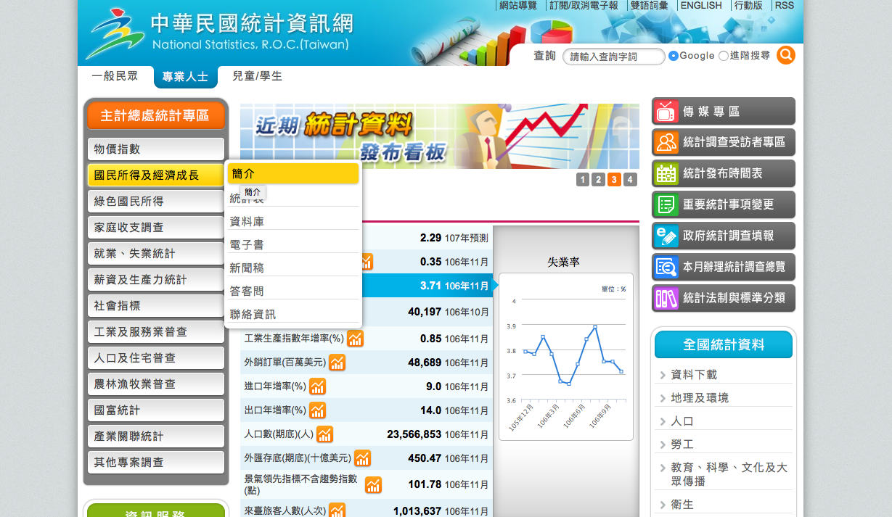
☝️ 選「國民所得與經濟成長」好了，大家對這個好像都蠻關切的。
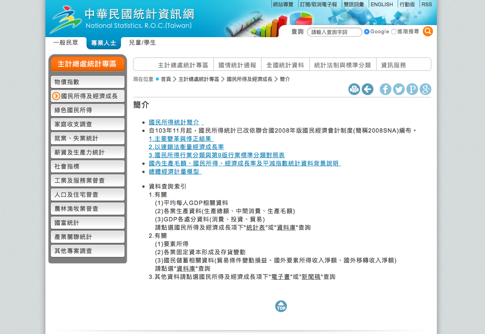
☝️ 是簡介，下方出現了神秘的資料查詢索引，上面畫底線的通通不能點，讓你在電腦前重溫30年前看說明書操作的惡趣味。
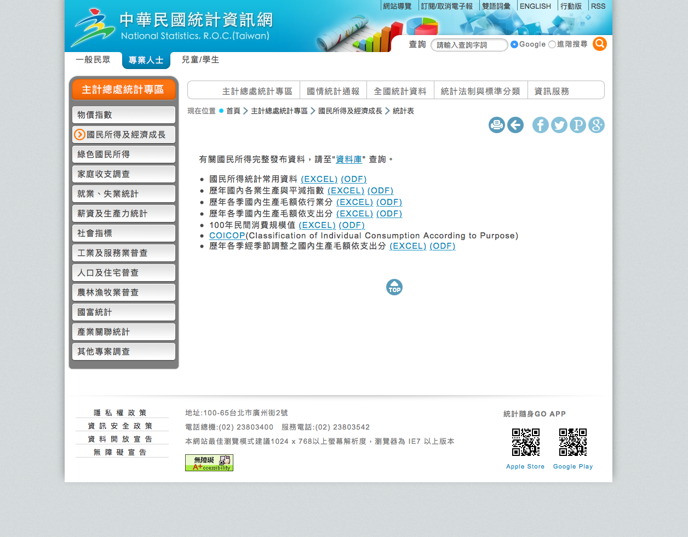
☝️ 統計表的部分，好，至少有提供excel格式了，感覺忽然專業許多呢。
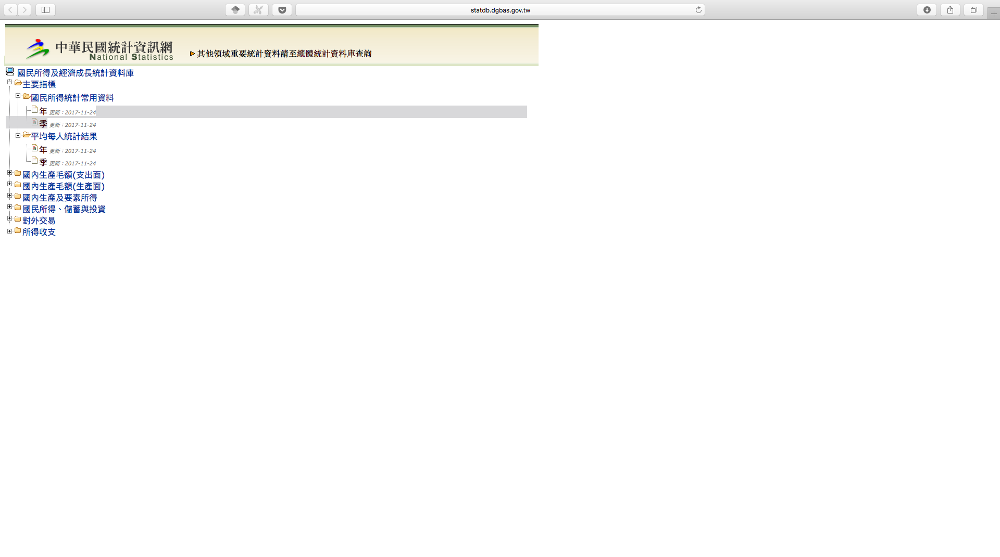
☝️ 要看更完整的資料，可以到「資料庫」查詢，於是我點下去，來到上面這個新的視窗。

其實它就跟芬蘭的 PX-Web 是同一套網頁程式！只不過功能與資料上都各種殘缺。實際上，就 PX-Web 的開發者——瑞典政府——的資料顯示，PX-Web examples，中花民國自由地區也是使用國。
看來它就是眼前的這個系統了，但這幾乎是孤島式的網站，沒有英文版。上面的資料也只有國民生產毛額、國民所得儲蓄與投資、對外交易、所得收支等幾項有資料，並沒有跟統計網上其他官方統計整合。最奇妙的是，儘管網站本身看起來很像Windows 98，但資訊有持續更新到去年度。在這個系統上，終於可以下載到 csv 格式了。
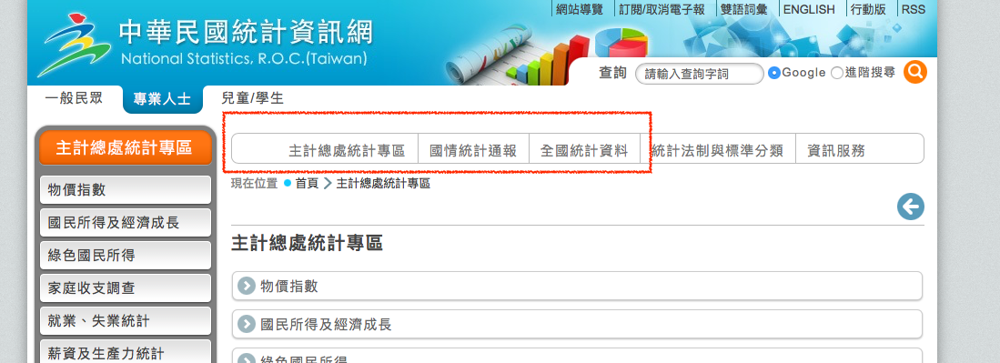
☝️ 有點氣餒地回到上一頁。有人可以告訴我上圖橫向menu的主計總處統計專區、國情統計通報、全國統計資料的差別嗎？「全國統計資料」似乎是比剛剛的「主計總處統計專區」範圍更廣的內容，但是中間高度重疊。譬如國民經濟一項，似乎跟「主計總處統計專區」的國民所得及經濟成長與國富統計是同樣的東西。

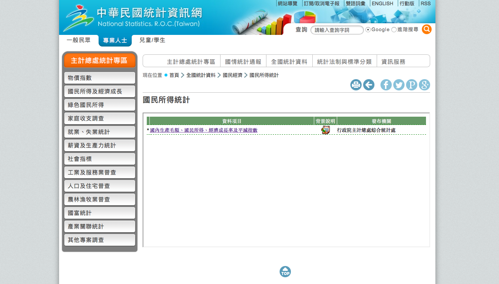
☝️ 當我點進國民所得統計，期待會看到跟剛剛一樣的頁面，結果不是。
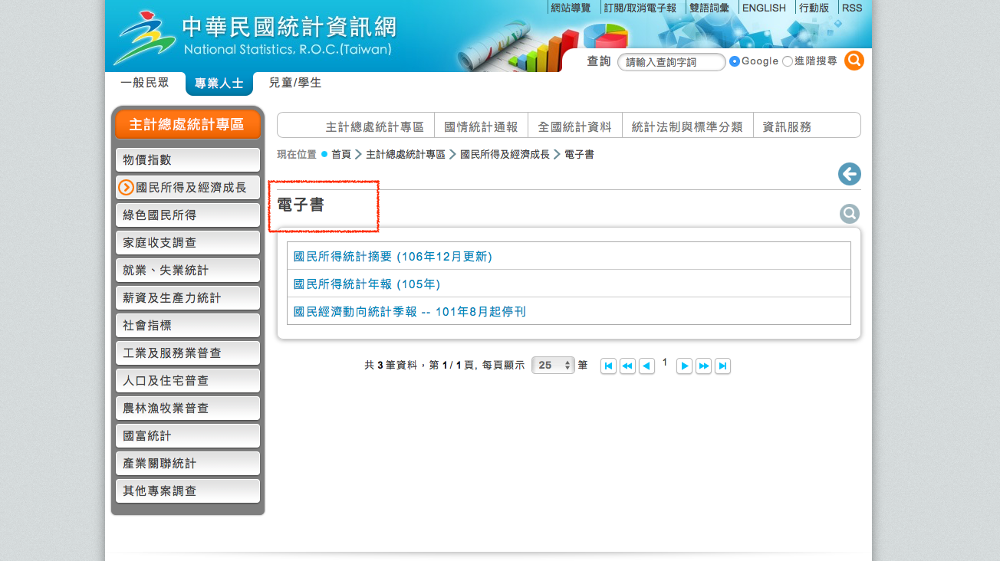
☝️ 試著點擊該唯一項目，居然跑到電子書的頁面了，我原本以為會直接拿到原始資料。
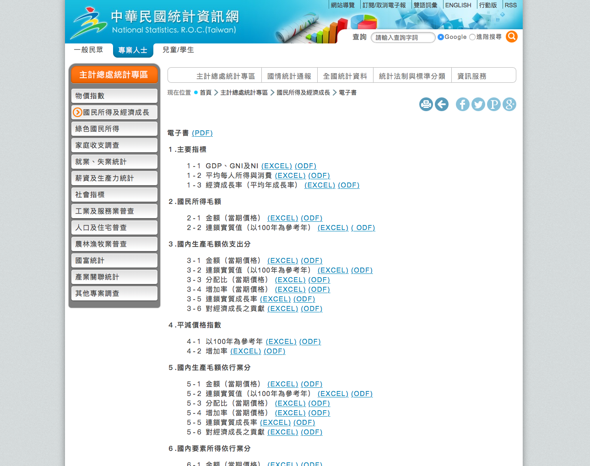
☝️ 再點進底下「國民所得統計摘要」的子項目，原本以為會看到pdf檔，畢竟是電子書嘛。
結果我獲得了大量的excel跟odf，為什麼你們不把這個放在「統計表」那一頁…
總之，統計線上資料庫跟迷宮一樣實在不太堪用。
腦海裡浮現的畫面是這個。
資訊服務
台灣的部分，把資訊服務放在上圖橫向menu的最右邊，連結在此。
點進去之後會發現，它還是跟其他統計專區的資料混在一起了，並沒有起理想上該有的分類作用，也沒有說明到底什麼是資訊服務。最下面雖然有個「聯絡我們」的線上表格系統。但僅供「歡迎您提出對本總處業務或網站的任何意見或建議」之用。
儘管如此，我還是在它的子分類找到這個，「電子書」跟「主計總處電子書平台」真的是熟悉又陌生的兩個概念。
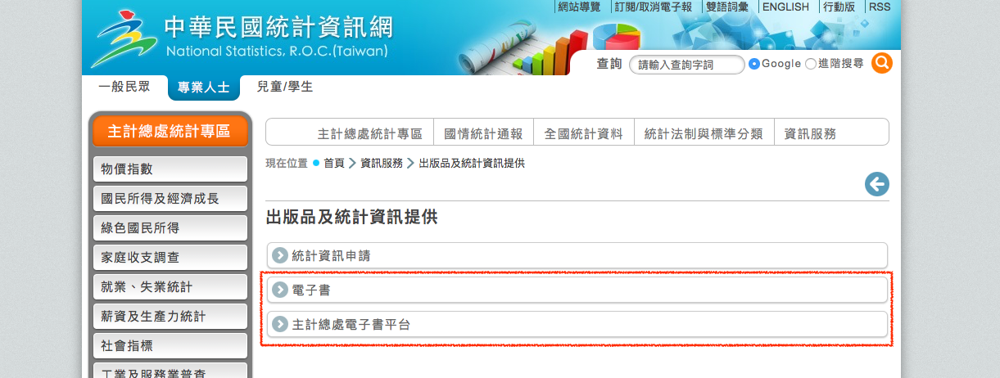電子書
原來電子書是在統計資訊網抓pdf，電子書平台是另外開一個網站抓pdf，還不能線上看，見識了。
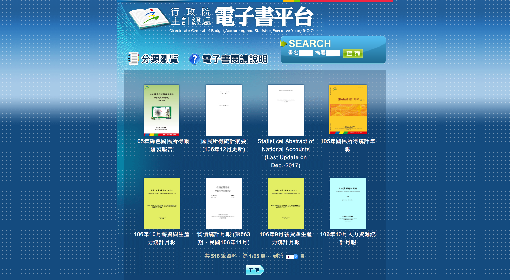電子書平台，真的很棒。
統計資訊申請的部分，提供兩個服務，一個是叫你去直接跟政府統計出版品的經銷商買書，另一個是下載docx檔申請書，頗具古風地列印填寫傳真回給主計總處申請，且只能申請普查資料。芬蘭這邊是用網頁表單跟e-mail申請：Library of Statistics，而且服務範圍廣得多。
教育服務
教育服務的入口非常不明顯，但我還是找到了，有數位教材，也有每年主計節舉辦的研討會。
跳回一般人士的網站，我找到另一個不明顯的入口：「有趣的統計」，看起來也是公眾教育用的數位資源。
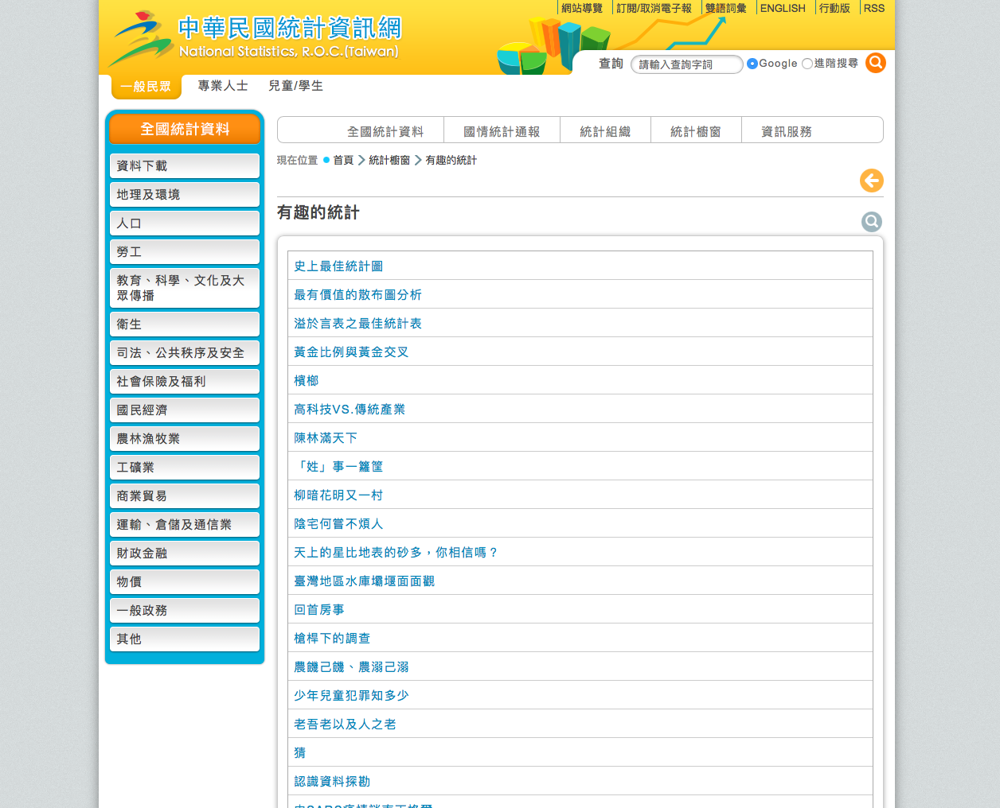有趣的統計
點進去全部都是pdf，作者有相當逗趣的筆名，譬如小魚兒的作品〈中山北路走七擺〉
「有些地方道路名稱還是蠻有意思的……參照我國版圖相當位置取名，所以在台北市找廣州街，就要往南，要到酒泉街朝西北走準沒錯。
至於高雄市當然就屬那從南到北十條寬大筆直的大路，由南端一心路依序到北端的十全路，這一至十的數字含意有許多不同說法，這裏提供黃福鎮先生「地名趣談」乙文中所整理的 資料，了解數字道路典故由來:
1.一心路:取「萬眾一心」之意。 2.二聖路:「二聖」是指孔子和關公，兩人分稱文聖、武聖。 3.三多路:取多福、多壽、多男子的意思，是祝頌的話，引自(莊子，天地)所載「使聖人富，使聖人壽，使聖人多男子」，而「多富」因為音似轉稱「多福」，沿用至今。 4.四維路:指禮、義、廉、恥四個立國的綱紀……」
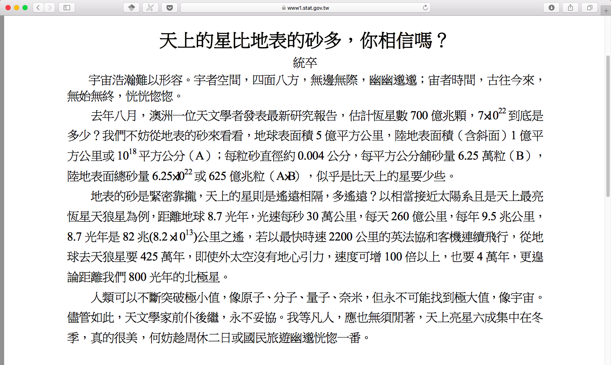
☝️ 個人認為〈認識資料探勘〉、〈感謝吾妻〉、〈天上的星比地表的砂多，你相信嗎?〉等堪稱傳世之作。
真的很棒。
☝️ 給學生的網站，詳參：歡迎光臨中華民國統計資訊網─統計學習資源專區。我非常好奇是哪家公司接的標案，首頁笑得我心裡發寒。
裡面有一些相當厲害的藝術作品，離題了，略過不表。
主計總處沒有提供如Statistics Finland那樣的實體課程。
諮詢服務
沒有提供。
官方統計報告
有，就是上面提到的的電子書資料庫、線上統計資料庫介面混在一起，無法確認哪邊是統整入口介面。除此之外，有定期以pdf格式發佈的國情統計通報，但所引用之相關統計並未如芬蘭一樣提供線上連結。
以上是台灣的部分，其實，芬蘭有的五大類服務，台灣也大致上有，只是最終呈現的服務品質落差甚大。有鑒於政府網站做得很爛並不是只有主計總處才有的事情，所以我不會把上述網站做得不好的部分全部歸因以下要討論的架構。我會試圖專注在架構跟所提供服務本身的關聯。
先別提這個了，那統計本身的品質呢？
針對統計資料本身，有兩個較為知名且行之有年的標準可供參考，OECD組織(2002)使用七個面向衡量其品質，以下為我自譯與大意：相關（relevance，統計產品與使用者需求相符）、準確（accuracy，大致上就是良好的信效度的意思）、長期（timeliness，資料是否能描述長期現象？）與即時（punctuality，發布是否即時？）、可及（accessibility，資料是否容易為公眾觸及、介面與媒體是否親和？）、可釋性（interpretability，資料是否容易為使用者理解與分析？這部分也與後設資料（metadata）是否有妥善提供有關。）、 一致（coherence，統計產品是否彼此有邏輯地串接與相互一致？例如用詞、統計方法等的一致。）、可信（credibility，資料基於發布者形象而受使用者信賴的程度）；而歐盟使用五個，也是類似的標準：relevance of statistical concept, accuracy of estimates, timeliness and punctuality in disseminating results, accessibility and clarity of the information, comparability, coherence, and completeness。
而回到分析本身，這是我目前的短板。這遠遠超出我的能力，一方面又囿於台灣的國際困境，我沒辦法找到近期的跨國比較文獻。
只能先猜測，台灣的官方統計本身品質應該並不差，早在1998年，中國統計學社理事長韋端在年會回顧台灣五十年的統計發展，就曾提到：
「我政府統計資料品質及確度向獲國內外佳評，例如一九九五年英國「經濟學人 (The Economist) 」雜誌曾對二十四個新興國家之統計品質作評比，其中我國無論在資料時效性、可信度、客觀性及周延性等評價均被列為最佳之Ａ級，顯示統計品質已具國際水準，並深獲使用者肯定。由於政府迅速、精準的提供統計資料，並事前公告發布資料日期，國際工商業界得以及時掌握正確的商情資訊，使我國投資環境受到知名國際投資風險評鑑機構之青睞，如美國商業環境風險評估機構 BERI 、政治暨經濟風險顧問公司 PERC等，即對我國財政金融統計給予甚高的評價，亦使外國投資機構對台灣投資環境具高度的信心。」
問題是這篇報導太老了，已經是20年前，參考價值必須打折，但我現階段只能猜測，國內統計資料本身的品質，不會在這段時間太嚴重地往下滑，反倒因為資通科技的應用，而有所提升（如果不跟周邊也同時進步中的國家比的話啦……）。
下一篇會討論服務冰山底下的組織架構，如何與表層的服務相關。
複習：國家統計系統的冰山模型
附記
背景說明
這是我在Aalto第二個學期的期末報告，課程是產品架構設計（Product Architecture Design）。原初是是分析芬蘭的官方統計服務，因為英文有相當嚴苛的字數限制，翻回中文之後，我才補進台灣的部分進一步分析。
選這個題目的初心來自去年在京都大學參加一個社會學學術工作坊，除了台大外，有首爾大學跟京都大學的師生帶團參加。當時蠻驚訝日本學生如何使用他們的政府統計系統，而且印象中，他們的統計網站可以自動生成圖表以供使用，十分方便。後來來到芬蘭，我發現官方統計也做得相當好懂。此時令我非常感興趣的是，服務設計背後提供服務的組織本身，如何影響其所設計/提供的服務。
本學期的課程閱讀主要跟產品架構（Architecture）有關。與之有關的創新理論由Henderson 與 Clark (1990) 在哈佛商業評論提出。雖然應用在設計領域，以往偏向硬體的分析，但發展至今，已經不限於有形物件，我將其拓展到提供產品的組織。此外，一個我很有興趣的設計領域是參與式設計，本質上它也在討論設計相關的行動者，應該建立的是怎麼樣的關係，而這樣的關係最終影響設計的產出。這與前開組織與架構的討論有呼應之處。
限於新的學期就要開始，我必須今天結束這份報告的撰寫。而我在著手這個題目之前，對國家統計這個題目從未涉獵，就手上擁有的資料我無法做出有力的結論。事實上，若能以最後的結論倒敘重新安排文章結構，這篇文章會通暢得多（我還是覺得我找到的這些資料蠻有趣的）。但現在就維持這樣有點類似memo而且口語的形式，當作思路發展的一個紀錄。
PX-Web
這是瑞典政府開發的網頁應用，並且有相關的 API 規範，已經為20多國與國際組織採用，雖然醜，但蠻好用的。PX-Web examples
- 瑞典的例子
Statistical database Sweden - 荷蘭中央統計局雖然不採用 PX-Web，但也是以類似的邏輯去設計線上統計資料庫：CBS StatLine
- 內地也使用類似的系統，同樣可自動產生圖表：
Portal Site of Official Statistics of Japan
參考資料
- Eurostat, “Assessment of quality in statistics - Definition of Quality in Statistics”, Working Group, Luxembourg, October 2003.
- Henderson, R. M., & Clark, K. B. (1990). Architectural innovation: The reconfiguration of existing product technologies and the failure of established firms. Administrative science quarterly, 9-30.
- Kenett, R. S., & Shmueli, G. (2016). From quality to information quality in official statistics. Journal of Official Statistics, 32(4), 867-885.
- OECD (2003). Quality Framework for OECD Statistics.
- 韋端，1998，台灣五十年來統計之發展。中國統計學社。http://www.stat.org.tw/data/ChairmanSpeech/理事長致詞87.doc ，取用日期：2017年12月29日。